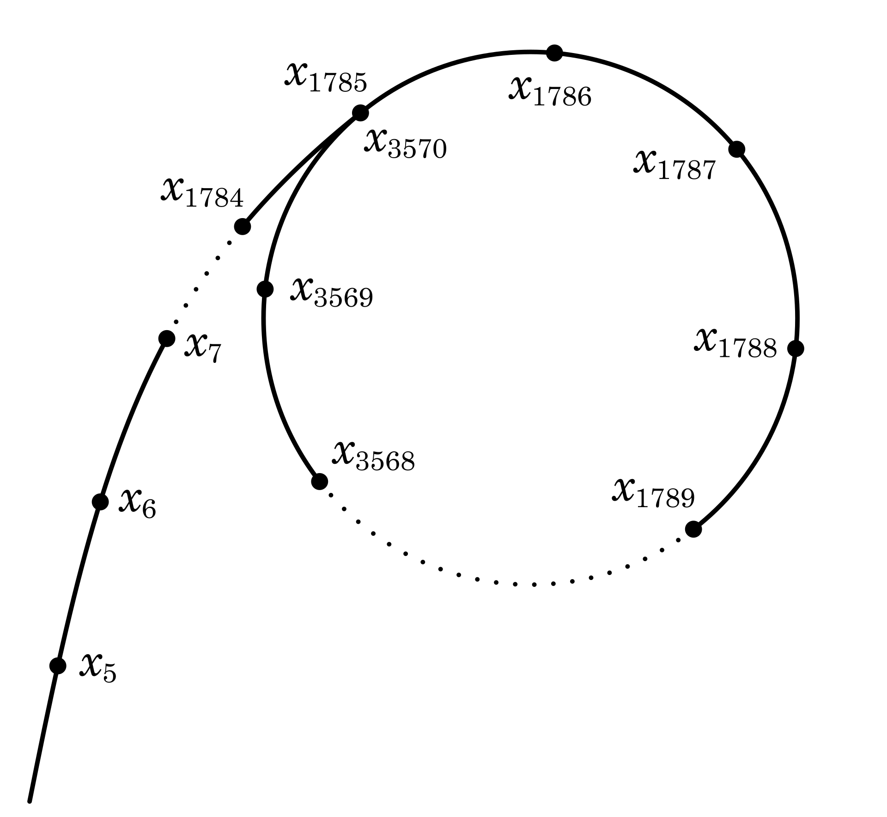

RSA的攻与防（二）
这是RSA攻防战的第二篇。本文首先补充说明特定情况下的两种大数分解方法，介绍它们的算法精要和适用场景，并给出Python参考实现。接下来深入解析典型的低私钥指数攻击算法——维纳攻击，详细讲解其数学基础、攻击原理及流程，也提供了完整的Python程序。文中还引用了近年最新研究的维纳攻击成立时私钥指数新上限，还使用测试用例验证了这一上限的正确性。
上篇：RSA的攻与防（一）
大数分解（补充）
即使RSA加密算法所使用的模数\(N\)是很大的数值（有足够多的比特位），如果其素因数\(p\)和\(q\)差距太小或太大，也会产生问题。这时有特定的因数分解算法，可以有效地从公钥模数\(N\)中分离出\(p\)和\(q\)。
费马因数分解法
当素因数\(p\)和\(q\)相距太近时，应用费马因数分解法能在一个很短的时间内分解模数\(N\)。费马因数分解法（Fermat's factorization method）以法国数学家皮埃尔·德·费马（Pierre de Fermat）的名字命名。其出发点是每一个正奇整数都可以表示为两个完全平方数之差，即 \[N=a^2-b^2\] 右边适用代数因式分解后得到 \((a+b)(a-b)\)。如果这两个因子都不为1，则它们是\(N\)的非平凡因子。对于RSA的模数\(N\)，假定 \(p>q\)，对应就有 \(p=a+b\)和 \(q=a-b\)。反过来，可以导出 \[N=\left({\frac {p+q}{2}}\right)^{2}-\left({\frac {p-q}{2}}\right)^{2}\] 费马因数分解法的思想就是从\(\lceil{\sqrt N}\rceil\)开始，逐次加一尝试 \(a\)的各种值，验证是否有 \(a^{2}-N=b^{2}\)。如果为真，就找到了两个非平凡因子，也就是 \(p\) 和 \(q\)。这种方法所需的步数大约为 \[{\frac{p+q}{2}}-{\sqrt N}=\frac{({\sqrt p}-{\sqrt q})^{2}}{2}=\frac{({\sqrt N}-q)^{2}}{2q}\]
一般情况下，费马因数分解法比试除法好不到哪去，最坏情况下可能更慢。然而，当 \(p\) 和 \(q\) 的差值不大时，\(q\) 很接近\(\sqrt N\)，计算的步数就非常少了。极端的例子是，如果 \(q\) 与\(\sqrt N\)的差异小于\({\left(4N\right)}^{\frac 1 4}\)，此方法只需要一步就结束了。
以下是费马因数分解法的Python实现，以及应用于分解RSA模数\(N\)的示例
1 | import gmpy2 |
程序开始定义的FermatFactor()函数实现费马因数分解法。它调用了gmpy2的三个库函数：isqrt()求整数平方根，square()实现平方运算，is_square()验证是否为平方数。后面给出两个154个十进制数位的大素数 \(p\) 和 \(q\)，二者相乘得到\(N\)。然后将\(N\)输入到FermatFactor()函数，同时计时。函数返回后打印耗时并确认分解出数值。
此程序在 MacBook Pro（2019）上的运行结果是
1 | N = 55089599753625499150129246679078411260946554356961748980861372828434789664694269460953507615455541204658984798121874916511031276020889949113155608279765385693784204971246654484161179832345357692487854383961212865469152326807704510472371156179457167612793412416133943976901478047318514990960333355366785001217 |
可以看到，不到半分钟的时间，这个308个十进制数位（约为1024比特）的大数就被成功分解出来了！再回头审查 \(p\) 和 \(q\)，可以发现这两个154个十进制数位的大素数前面71位完全一样。这正是费马因数分解法发挥力量的场景。如果简单修改FermatFactor()函数，保存起始的\(a\)值与循环结束后的值比较，得到循环次数60613989。如此之小的数值，难怪这么快分解就完成了。
因此，大素数 \(p\) 和 \(q\) 的选择不仅要随机，还必须相距足够远。在得到两个大素数后，必须检查它们之间的差值。如果太小就要重新生成，以防止被攻击者使用费马因数分解法爆破。
波拉德 \(\rho\) 算法
物极必反。虽然大素因数\(p\)和\(q\)要相距足够远，但如果差距太大也是危险的，这时可能会被波拉德 \(\rho\)（rho）算法破解。此算法由英国数学家约翰·波拉德1于1975年发明。它仅需要少量的存储空间，其预期运行时间与被分解合数的最小素因数的平方根成正比。
波拉德 \(\rho\) 算法核心思想是利用遍历序列的碰撞规律来搜索因子，其随机性和递归性使得它可以在相对较低的复杂度内有效分解整数。首先，对于\(N=pq\)，假定 \(p\) 是较小那个非平凡因子。算法定义了一个基于模\(N\)的多项式\[f(x)=(x^{2}+c){\pmod N}\] 用此多项式做递归调用可以生成一个伪随机序列，序列的生成公式是 \(x_{n+1}=f(x_n)\)。比如给定一个的初始值 \(x_0=2\) 和常数 \(c=1\)，就有 \[\begin{align} x_1&=f(2)=5\\ x_2&=f(x_1)=f(f(2))=26\\ x_3&=f(x_2)=f(f(f(2)))=677\\ \end{align}\] 对于这样产生的序列中的两个数 \(x_i\) 和 \(x_j\)，如果 \(x_i\neq x_j\) 并且 \(x_i\equiv x_j{\pmod p}\)，则 \(|x_i-x_j|\) 一定是 \(p\) 的倍数。这时做最大公约数运算 \(\gcd(|x_i-x_j|,N)\)，结果就是 \(p\)。依据生日悖论，在最坏情形下，期望在生成大约\(\sqrt p\)个数后，就会出现两个在模 \(p\)下相同的数，从而成功分解\(N\)。但是，由于要执行两两比较，此时的时间复杂度还是不令人满意。另外，当\(N\)很大时，保存这么多数也是一个麻烦。
如何解决这些问题？这正是波拉德 \(\rho\)算法的精妙所在。波拉德发现，这个伪随机数生成器生成的序列有两个特性：
因为每个数仅取决于其前面的值，同时模运算下生成的数又是有限的，所以迟早会进入循环。如下所示，最终生成的序列会构成与希腊字母 \(\rho\)形状相似的有向图，算法名称也由此而来。
当 \(|x_i-x_j| \equiv 0 \pmod p\) 时，一定有 \[|f(x_i)-f(x_j)|=|{x_i}^2-{x_j}^2|=|x_i+x_j|\cdot|x_i-x_j|\equiv 0 \pmod p\] 这说明序列中如果两个数满足模运算条件，所有等距的数对都满足同样的条件。
洞悉这两个特性的波拉德利用Floyd环路判定算法（也称龟兔赛跑算法），设置快慢两个节点 \(x_h\) 和 \(x_t\)。从相同的初始值 \(x_0\) 出发，慢节点 \(x_t\) 每步移动到序列下一个节点，而快节点 \(x_h\) 一次向前移动两个节点，即 \[\begin{align} x_t&=f(x_t)\\ x_h&=f(f(x_h))\\ \end{align}\] 之后，计算 \(\gcd(|x_h-x_t|,N)\)，大于1且小于\(N\)的结果就是 \(p\)，否则继续同样的步骤。在这样的设计下，因为每次移动都相当于检查一个新的节点间距，这样就不必要进行两两比较了。如果没有找到，最终快慢节点会在环上相遇，这时求最大公约数的结果为\(N\)。此时算法的建议是退出，然后换一个初始值或常数 \(c\) 重新生成伪随机数序列再试。
这就是经典的波拉德 \(\rho\) 算法。它的时间复杂度是\(𝑂(\sqrt p\log N)\)（\(\log\)来源于所需的\(\gcd\)运算）。对于RSA模数\(N\)，显然 \(p\leq \sqrt N\)，于是时间复杂度上限可写为\(𝑂(N^{\frac 1 4}\log N)\)。波拉德 \(\rho\) 算法的时间复杂度表达式说明：被分解合数的最小素因数越小，预期的分解就越快，太小的 \(p\) 是极不安全的。
波拉德 \(\rho\) 算法的编程不难，下面的Python程序给出了算法的函数实现PollardRhoFactor()和一些测试用例
1 | import gmpy2 |
函数PollardRhoFactor()接受三个参数：n是待分解的合数，seed是伪随机序列的初始值，c是生成多项式中的常数值。函数内部使用两个while构成双循环：外循环定义生成多项式f和快慢节点h及t，内循环实现节点移动和最大公约数运算。只有当最大公约数d不为1时，才结束内循环。此时如果d不等于n，它就是要找的非平凡因子，函数返回d。d等于n时，快慢节点已在环上相遇。这时在外循环重设seed为快节点的数值，并将c加一，就此重新开始新的一轮搜寻。
在 MacBook Pro（2019）上运行以上代码，输出如下
1 | N P Elapsed Time (s) |
此结果证明了波拉德 \(\rho\) 算法的有效性。特别是最后一个测试，函数的输入是费马数 \(F_8\)（定义是 \(F_{n}=2^{2^{n}}+1\)，其中 \(n\) 为非负整数）。在1980年，波拉德与澳大利亚数学家理查德·布伦特2一起应用此算法首次分解\(F_8\)。当时他们使用的是UNIVAC 1100/42计算机，耗时2小时。而现在，在一台普及版的笔记本电脑上，波拉德 \(\rho\) 算法用时64.4秒就分解出了\(F_8\)的较小的素因子1238926361552897。
后续波拉德与布伦特还对算法做了进一步的改进。他们观察到，如果\(\gcd(d, N)>1\)，对于任意正整数 \(k\)，也有\(\gcd(kd, N)>1\)。所以将连续 \(k\) 个\((|x_h-x_t| \pmod N)\)相乘，用得到的积做模\(N\)运算，再与\(N\)求最大公约数，可以得到一样的结果。这种方法用\((k-1)\)次模\(N\)上的乘法和一次\(\gcd\)代替 \(k\) 次\(\gcd\)，从而达到加速效果。缺点是，有时它可能会因引入一个重复因子而导致算法失败。在这种情况下，可以将 \(k\) 重设为1，返回常规波拉德 \(\rho\) 算法。
下面的Python函数实现了改进的波拉德 \(\rho\)算法。它加入了额外的一个for循环实现 \(k\) 个差值模\(N\)上的连乘，得到的积存在变量mult中。mult再与\(N\)求最大公约数，结果赋值给d。如果失败，\(k\) 在外循环里被置为1。
1 | def PollardRhoFactor2(n, seed, c, k): |
使用同样的测试用例，调用时设\(k\)为100，程序运行的结果是
1 | N P Elapsed Time (s) |
可以看到，对于比较小的合数\(N\)，改进并不明显。当\(N\)变大时，速度明显加快。对于十进制78位的费马数 \(F_8\)，改进的波拉德 \(\rho\) 算法用时仅为46.6秒，对比常规算法加速比超过27%。改进的波拉德 \(\rho\)算法确实带来了速度的显着提升。
总结以上波拉德 \(\rho\)算法的分析、实现和测试，在生成RSA所用的素数 \(p\) 和 \(q\) 时，有必要设置一个数值下限。如果其中任何一个太小，必须重新生成，不然就可能被攻击者应用波拉德 \(\rho\) 算法破解。
低私钥指数攻击
对于一些特殊的应用场景（如智能卡和物联网），受限于设备的计算能力和低功耗要求，需要小一些的私钥指数 \(d\) 以加快解密或生成数字签名的速度。然而，太低的私钥指数非常危险，有一些巧妙的攻击方法可以完全瓦解RSA加密系统。
维纳攻击
1990年，加拿大密码学家迈克尔·维纳（Michael J. Wiener）构思了一种基于连分数逼近的破解方案3，在一定条件下可以有效地从RSA的公开密钥\((N,e)\)解出私钥指数\(d\)。在讲解这种攻击的工作原理之前，先简单介绍一下连分数的概念和关键特性。
连分数
连分数本身只是一种数学表达式，但它引入了一种研究实数的新视角。以下就是典型的连分数\[x = a_0 + \cfrac{1}{a_1 + \cfrac{1}{a_2 + \cfrac{1}{\ddots\,}}} \] 其中 \(a_{0}\)是整数，而所有其他的 \(a_{i}(i=1,\ldots ,n)\)都是正整数。连分数也常常简写作\(x=[a_0;a_1,a_2,\ldots,a_n]\)。连分数有如下性质：
有理数可以表示为有限连分数，即有限数目的\(a_{i}\)。无理数可用一种精确的方式表示为无限连分数。下面是两个例子： \[\begin{align} \frac {68} {75}&=0+\cfrac {1} {1+\cfrac {1} {\small 9+\cfrac {1} {\scriptsize 1+\cfrac {1} {2+\cfrac {1} {2}}}}}=[0;1,9,1,2,2]\\ π&=[3;7,15,1,292,1,1,1,2,…] \end{align}\]
计算正有理数 \(f\) 的连分数表示时，先减去 \(f\) 的整数部分，然后反复倒转余数并减去整数部分，直到余数为零。设 \(a_i\) 为整数商，\(r_i\) 为第 \(i\) 步的余数，\(n\) 为倒转步数，则有 \[\begin{align} a_0 &= \lfloor f \rfloor, &r_0 &= f - a_0\\ a_i&={\large\lfloor} \frac 1 {r_{i-1}} {\large\rfloor}, &r_i &=\frac 1 {r_{i-1}} - a_i \quad (i = 1, 2, ..., n)\\ \end{align}\] 用Python语言实现的正有理数的连分数扩展函数如下
1
2
3
4
5
6
7
8
9
10
11
12
13
14
15
16
17
18
19def cf_expansion(nm: int, dn:int) -> list:
""" Continued Fraction Expansion of Rationals
Parameters:
nm - numerator
dn - denomainator
Return:
List for the abbreviated notation of the continued fraction
"""
cf = []
a, r = nm // dn, nm % dn
cf.append(a)
while r != 0:
nm, dn = dn, r
a = nm // dn
r = nm % dn
cf.append(a)
return cf无论是有理数还是无理数，其连分数表示的初始段计算出来的有理数都提供了对这个数本身逐次的逼近。这些有理数被称为连分数的收敛子（convergent，也译为“渐进分数”）。所有偶数编号的收敛子都小于原数，而奇数编号的收敛子都大于它。记连分数第 \(i\) 个收敛子的分子为 \(h_i\)，分母为 \(k_i\)，并且设定 \(h_{-1}=1,h_{-2}=0\) 和 \(k_{-1}=0,k_{-2}=1\)，则收敛子的递归计算公式为 \[\frac{h_i}{k_i}= \frac{a_i h_{i-1}+h_{i-2}}{a_i k_{i-1}+k_{i-2}}\] 比如对于上面的例子\(\frac {68} {75}\)，其连分数的连续收敛子依次为 \[\begin{align} \frac {h_0} {k_0} &= [0] = \frac 0 1 = 0<\frac {68} {75}\\ \frac {h_1} {k_1} &= [0;1] = \frac 1 1 = 1>\frac {68} {75}\\ \frac {h_2} {k_2} &= [0;1,9] = \frac 9 {10}<\frac {68} {75}\\ \frac {h_3} {k_3} &= [0;1,9,1] = \frac {10} {11}>\frac {68} {75}\\ \frac {h_4} {k_4} &= [0;1,9,1,2] = \frac {29} {32}<\frac {68} {75}\\ \end{align}\]可以验证这些收敛子满足前述的奇偶性质，而且越来越接近真实值。下面的Python函数实现了一个给定连分数的收敛子生成器，它返回收敛子分子和分母元组对象。
1
2
3
4
5
6
7
8
9
10
11
12
13
14
15
16
17
18
19
20
21
22
23def cf_convergent(cf: list) -> (int, int):
""" Calculates the convergents of a continued fraction
Parameters:
cf - list for the continued fraction expansion
Return:
A generator object of the convergent tuple
(numerator, denominator)
"""
nm = [] # Numerator
dn = [] # Denominators
for i in range(len(cf)):
if i == 0:
ni, di = cf[i], 1
elif i == 1:
ni, di = cf[i]*cf[i-1] + 1, cf[i]
else: # i > 1
ni = cf[i]*nm[i-1] + nm[i-2]
di = cf[i]*dn[i-1] + dn[i-2]
nm.append(ni)
dn.append(di)
yield ni, di关于连分数的收敛子还有一个重要的勒让德定理4（Legendre Theorem）：对于正有理数 \(f\)，如果整数 \(a\) 和正整数 \(b\)（即 \(a∈ \mathbb Z, b ∈ \mathbb Z^+\)）满足\[\left\lvert\,f - \frac a b\right\rvert< \frac 1 {2b^2}\]那么\(\frac a b\)等于 \(f\) 的连分数的一个收敛子。
攻击原理
现在解析维纳攻击的工作原理。从RSA公私钥之间的关系 \(ed\equiv 1 {\pmod {\varphi (N)}}\)，可以导出存在整数 \(k\) 使得\[ed - k\varphi (N) = 1\] 两边同时除以 \(d\varphi (N)\) 得到\[\left\lvert\frac e {\varphi (N)} - \frac k d\right\rvert = \frac 1 {d{\varphi (N)}}\] 仔细观察上式，因为\(\varphi (N)\)本身很大，而且\(\gcd(k,d)=1\)，\(\frac k d\)与\(\frac e {\varphi (N)}\)非常接近。此外\[\varphi (N)=(p-1)(q-1)=N-(p+q)+1\]其与\(N\)的差值也相对很小，所以\(\frac k d\)与\(\frac e N\)也相差不大。RSA的\((N,e)\)都是公开的，由此维纳大胆地构想——如果对\(\frac e N\)进行连分数展开，有可能\(\frac k d\)就是其中的某个收敛子！
那么如何验证某个收敛子确实就是\(\frac k d\)呢？有了 \(k\) 和 \(d\)，就可以算出 \(\varphi (N)\)，从而得到 \((p+q)\)。既然 \((p+q)\) 和 \(pq\) 都已知，构造一个简单的一元二次方程5就能解出 \(p\) 和 \(q\)。如果二者相乘等于\(N\)，\(k\) 和 \(d\) 就是对的，攻击就成功了。
维纳攻击成立的条件是什么？参考上一节讲到的勒让德定理，可以得出如果有 \[\left\lvert\frac e N - \frac k d\right\rvert < \frac 1 {2{d^2}}\]则\(\frac k d\)一定是\(\frac e N\)的某个收敛子。由此式还能推导出攻击破解私钥指数 \(d\) 的上限。维纳的原始论文指出上界为 \(N^{\frac 1 4}\)，但是没有具体的分析。1999年，美国密码学家丹·博内6提供了第一个严格证明的上限，表明在 \(q<p<2q\) 和 \(e<\varphi (N)\) 的约束下，维纳攻击适用于 \(d<\frac 1 3 N^{\frac 1 4}\) 的情况。2019年，澳大利亚伍伦贡大学（University of Wollongong）的几位研究者发表的一篇新论文进一步拓展相同约束条件下的上限为 \[d\leq \frac 1 {\sqrt[4]{18}} N^\frac 1 4=\frac 1 {2.06...}N^\frac 1 4\]
注意，出于简洁的考虑，以上维纳攻击原理的解析基于欧拉函数 \(\varphi (N)\)。实际中RSA密钥对的生成经常使用卡迈克尔函数\(\lambda(N)\)。二者之间的关系是 \[\varphi (N)=\lambda(n)\cdot\gcd(p-1,q-1)\] 可以证明从 \(ed\equiv 1 {\pmod {\lambda (N)}}\) 出发，能得到同样的结论。实际上，维纳就是基于\(\lambda(N)\)推导的，感兴趣的读者请去仔细阅读他的原始论文。
攻击流程
理解了维纳攻击的原理，其攻击流程可以总结如下：
- 将\(\frac e N\)作连分数展开
- 生成此连分数的连续收敛子序列
- 依次检查每个收敛子的分子 \(k\) 和分母 \(d\)
- 如果\(k\)为零，或\(d\)为偶数，或不满足 \(ed\equiv 1 \pmod k\)，跳过此收敛子
- 计算 \(\varphi (N) = \frac {ed-1} k\)，求 \(x^2−(N−\varphi (N)+1)x+N\) 的整数根 \(p\) 和 \(q\)
- 验证 \(N=p\cdot q\)，如果为真，攻击成功，返回 \((p,q,d)\)；否则继续
- 如果全部收敛子都检查完毕，维纳攻击失败。
对应的完整Python程序实现如下
1 | import gmpy2 |
上面的代码最后是两个测试用例。参考下面的程序运行输出，第一个用例给定一个较小的RSA模数 \(N\)，而 \(e\) 却相对较大，这正是维纳攻击发挥作用的场景。程序调用攻击函数wiener_attack()，迅速算出了 \(d\) 为7并解密恢复了原文Wiener's attack success!。
第二个用例设定了2048比特的 \(N\) 和 \(e\)，维纳攻击也很快成功了。同时程序还检验了破解出来的 \(d\)（511比特），确认它是大于旧的上限old_b（\(N^{\frac 1 4}\)），但略小于新的上限new_b（\(\frac 1 {\sqrt[4]{18}} N^\frac 1 4\)）。这证实了伍伦贡大学研究者的结论。
1 | p = 105192975360365123391387526351896101933106732127903638948310435293844052701259 |
无疑，这两个测试用例证明了维纳攻击的有效性和成立条件。要预防维纳攻击，就必须保证RSA私钥指数 \(d\) 大于能使攻击成立的上限值。有可能现在知道的上限也并非最终的边界，所以选择 \(d\) 不小于 \(N^\frac 1 2\) 是较为稳妥的方案。实际应用中，常常使用费马小定理和中国余数定理相结合推演出的一种加速解密方法，这样即使是较大的 \(d\) 也能实现快速解密和数字签名。
未完待续，敬请期待下篇：RSA的攻与防（三）
约翰·波拉德（John Pollard），英国数学家，1999年因对整数分解和离散对数的代数密码分析的重大贡献获得RSA数学卓越奖。↩︎
理查德·布伦特（Richard Brent），澳大利亚数学家和计算机科学家，其研究领域包括数论（特别是因式分解）、随机数生成器、计算机体系结构和算法分析，IEEE 和 ACM 双会士，澳大利亚科学院院士。↩︎
M. Wiener, “Cryptanalysis of short RSA secret exponents,” IEEE Trans. Inform. Theory, vol. 36, pp. 553–558, May 1990↩︎
阿德里安-马里·勒让德（Adrien-Marie Legendre），法国数学家，在统计学、数论、抽象代数与数学分析上贡献诸多。↩︎
丹·博内（Dan Boneh），以色列裔美国应用密码学家和计算机安全专家，美国数学学会会士，美国国家工程院院士，斯坦福大学教授。2005年获RSA数学卓越奖，2013年获哥德尔奖。↩︎